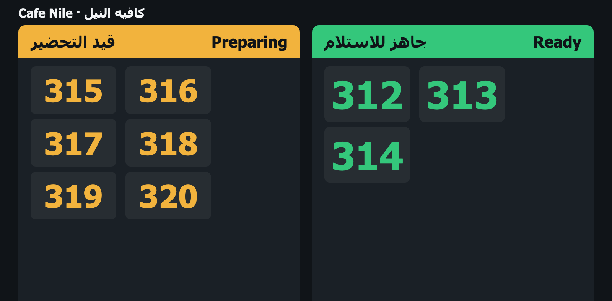
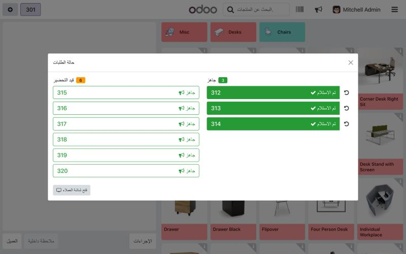

Show Preparing and Ready order numbers on a TV, and call each ready order out loud in Arabic and English. Works straight from the Point of Sale: no kitchen display needed.
شاشة تعرض أرقام الطلبات قيد التحضير والجاهزة، وتنادي على كل طلب جاهز بالصوت بالعربي والإنجليزي. تعمل من نقطة البيع مباشرة بدون شاشة مطبخ.

Every paid order appears under Preparing with its order number, automatically.
A new button in the POS top bar opens the order list. One tap moves an order to Ready.
The TV plays a chime and says "Order number 318 is ready", in Arabic, English or both.

Mark orders ready, mark them collected, or send one back to preparing if it was tapped by mistake. Fully translated to Arabic.
The voice uses the text-to-speech engine built into the screen's browser, so it needs no internet service and no subscription. The browser must have an Arabic voice for Arabic calls; when it has none, the Arabic call is skipped and the chime still plays.
Tested on: Google Chrome on macOS.
Questions or problems: contact me through the Odoo Apps store and I will answer within two working days.